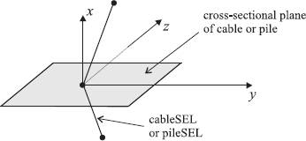
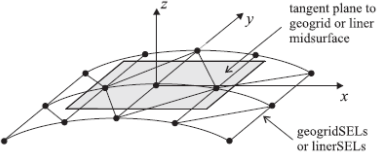

structure node create command
Syntax
- structure node create v <group s1 <slot s2 >>
Create a structural node at location v. Individually created nodes may be used to create elements using the by-nodeids command form (for example
structure beam create by-nodeids). When other command forms are used (for instance, by-line or by-ray), it is not necessary to separately create nodes when creating elements—they are created automatically as the element is created.There are two coordinate systems associated with each node: the global system and the local system.
- The global system can be used to specify generalized velocity and displacement boundary conditions, nodal positions, and applied loads. The global system does not change throughout the course of a simulation.
- The local system is used to specify attachment conditions that control how the node interacts with the grid. The local system can also be used to specify velocity boundary conditions. Also, the equations of motion are solved in these local directions; therefore, one may fix or free velocities in these directions only. Also note that any degrees-of-freedom of a node with a rigid attachment condition (such as the node-local \(y\)- and \(z\)-axes of a node used by a cable, which are rigidly attached to the zone in which the cable is embedded) cannot be fixed or freed, because the velocity of these degrees-of-freedom comes from the entity to which it is attached.
The orientation of the local system is set automatically at the start of a set of cycles (or when the
model cycle0 command is executed) based on the type of elements that use the node. For beams and shells, the local system is aligned with the global system. For cables and piles, the local system is oriented such that: 1) the \(x\)-axis is aligned with the average axial direction of all elements using the node; and 2) the \(yz\)-axes are arbitrarily oriented in the cable or pile cross-sectional plane (see the first figure below). For geogrids and liners, the local system is oriented such that: 1) the \(z\)-axis is aligned with the average normal direction of all elements using the node; and 2) the \(xy\)-axes are arbitrarily oriented in the geogrid or liner tangent plane (see the second figure below).Figure 1: Orientation of the node-local system for a node used by cables or piles
Figure 2: Orientation of the node-local system for a node used by geogrids or liners
(If more than one type of element is using a node, then the orientation of the local system will correspond with the first element type in the following list: liner, geogrid, pile, cable, shell, and beam. Thus, if a node is being used by both a geogrid and a cable, then the orientation of the local system will correspond with that of a geogrid.) When running in large-strain mode, the orientation of the local system is updated automatically based on the motion of the element that uses the node (unless this behavior is inhibited by the
structure node fix system-localkeyword).The optional keyword group may be used to assign a group name to the created node. The keyword slot may be used to specify what slot the group is assigned in; if not specified, the group will be assigned to slot Default. Use of the group logic is described in Groups.
| Was this helpful? ... | UDEC © 2018, Itasca | Updated: Mar 15, 2024 |